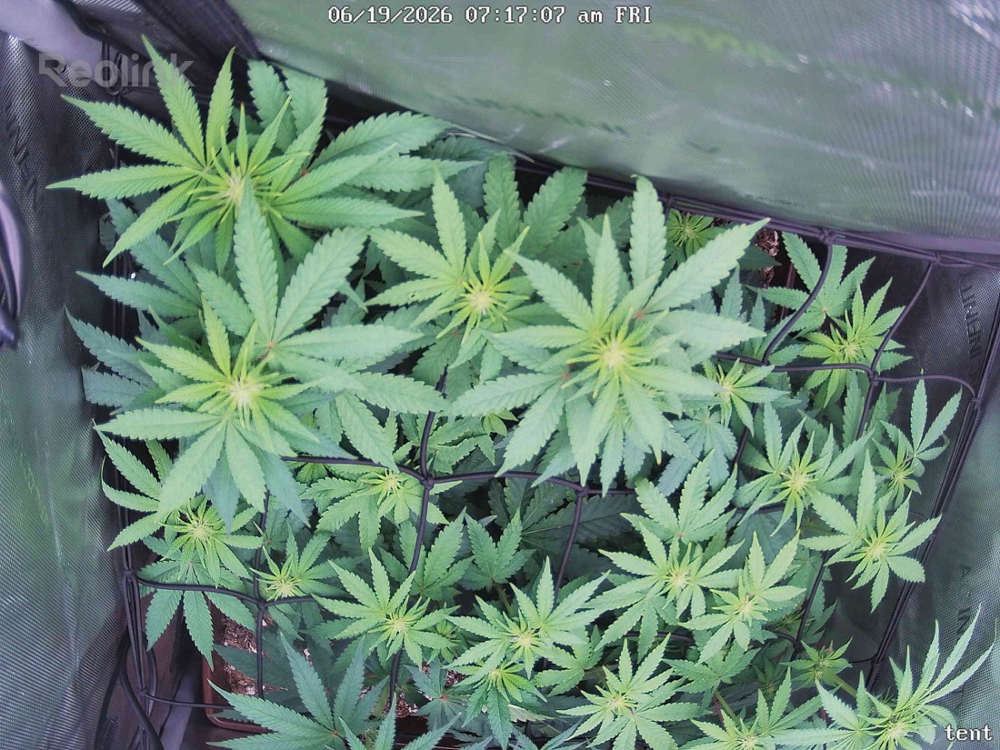

← All reports
Jun 19, 2026
Fri Jun 19, 2026 — 7:17 AM

Prognosis
Daily check-in — Day 16 of flower (flipped 6/3), papaya crush
- What changed: Near-identical framing day-over-day — this is a 24h interval, so changes are subtle. Canopy looks fractionally fuller, growth tips at the net plane are reaching slightly more upward, and overall green tone is consistent. No structural collapse, no new gaps. Even, flat canopy spread across the SCROG.
- Color: Healthy medium-to-deep green throughout. Lower/shaded leaves a touch lighter (normal light gradient), newest growth tips a brighter lime — expected for actively growing tops. No yellowing pattern that reads as deficiency.
- Stress signs: None of note. No tacoing, no clawing, no edge/tip burn at 700 PPFD center, no bleaching on the uppermost colas closest to the light. Leaf posture is flat and relaxed — good sign for both light level and water (last fed 1.5gal vermicompost tea 6/15, on schedule).
- Pests: No visible stippling, webbing, or mites in either frame. Consistent with your clean visual inspections 6/14 and 6/16. Stay the course — your 3rd Green Cleaner round was 6/16, so a 4th round ~6/19 would complete the egg-hatch coverage window if you want to be thorough.
- Phase check: Right on track. ~16 days into 12/12, you should be in the stretch-tapering / early bud-set window — canopy is well-leveled under the net, which is exactly where a SCROG plant should be at this point. Pre-flower sites should be forming at the noded tops; expect visible pistil clusters fattening over the next 1–2 weeks.
- Light: 700 PPFD at center is being handled without stress — tops are flat and dark, no fox-tailing or bleaching. You can hold here; only push toward 750–800 if you keep seeing zero stress and want to drive density (watch the colas nearest the diode wall first).
Suggested next actions: No action needed today beyond your existing routine. Optional: 4th Green Cleaner round tonight to close the mite cycle, and tuck any tops poking above the net.
Overall: Healthy, vigorous, well-trained plant tracking exactly where it should be for early flower — no problems visible, prognosis strong.